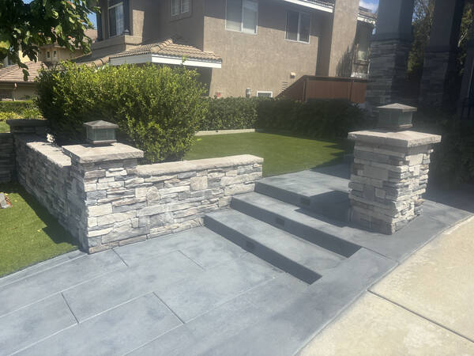

Decorative Entry & Columns for San Diego Homes
Driveway entry pillars, stone and concrete columns, address monuments, and decorative entry walls — all concrete and masonry work handled by our own crew. The first impression your home makes, built to last.

The entrance to your home — done right.
From a single address monument to a full driveway entry with paired columns, gate pillars, and decorative walls, we handle all the masonry and concrete work in-house. One crew, one standard of quality, start to finish.
Driveway Entry Pillars
Paired entry pillars that frame your driveway and set the architectural tone for your property — built from concrete block with stone veneer, stucco, or cast concrete finishes.
Gate Columns & Supports
Structural columns engineered to support automated driveway gates — sized and reinforced for the gate hardware and weight requirements of your specific gate system.
Stone & Stucco Column Finishes
Natural stone veneer, manufactured stone, stucco, tile, and cast concrete finishes applied to columns and pillars — matched to your home's existing exterior materials.
Address Monuments & Markers
Freestanding address monuments and property markers built from concrete and stone — a clean, permanent way to identify your property at the street.
Entry Walls & Wing Walls
Low decorative entry walls, wing walls, and planter walls that frame the driveway approach and connect columns to the home's landscaping and hardscape.
Lighting Rough-In
Conduit built into column structures during construction so lighting can be installed cleanly — no surface-mounted conduit, no afterthought wiring.
An entry that holds up as long as the house.
Entry columns take a beating — vehicle clearance, weather, gate stress, and thirty years of San Diego sun. We build them to stay plumb, stay solid, and keep looking good.
Proper footing & core fill
Every column starts with a properly sized footing and reinforced concrete core fill — not dry-stacked block. That's what keeps columns plumb and solid over time, especially under gate load.
Matched to your home's exterior
We assess your existing stonework, stucco, and architectural details on site and select finishes that integrate cleanly — so the entry looks like it was always part of the house.
All masonry in-house
Footing, block, stone, stucco, and finish — our own crew handles every step. One point of contact, no subcontractors, no handoffs between trades.
Transparent pricing from the start
Your estimate is clear before we start. If site conditions require a change order, we communicate it and get your approval before moving forward.
Make the right first impression on your San Diego home.
Schedule a free on-site consultation. We'll assess your driveway approach, review your finish options, and give you a straight quote on the entry your property deserves.
Built to last. Designed to impress.
From outdoor living spaces and stamped concrete to retaining walls and custom stonework — every project built by our crew, start to finish.
View Recent ProjectsTrusted by San Diego homeowners.
"John and his crew did a fantastic job. Very professional, hard-working, and dedicated. I would definitely use John for future projects and recommend him to anyone."
What San Diego homeowners ask before we build.
Let's talk about your San Diego entry project.
No sales pitch. No pressure. A free on-site assessment and quote — that's it.
Fast response from our local San Diego team — North County, Coastal, Inland, South Bay and everywhere in between.